Com o utente já deitado na marquesa à espera, não podes hesitar sobre o ponto motor exato do VMO, a distância entre elétrodos ou a direção das fibras.
Evita trocar cabos ou hesitar entre montagem bipolar longitudinal, coplanar ou tetrapolar cruzada na coluna lombar, cervical, coifa ou joelho.
Aplicar largura de pulso (µs) ou frequência desajustada reduz o efeito analgésico ou gera desconforto elétrico desnecessário no utente.
Em vez de procurar em livros pesados à frente do utente, abres a prancha visual no telemóvel ou tablet em 5 segundos ao lado do aparelho.
Visualiza estruturas clínicas, canais e parâmetros num relance: uma região, uma folha, uma resposta clara.
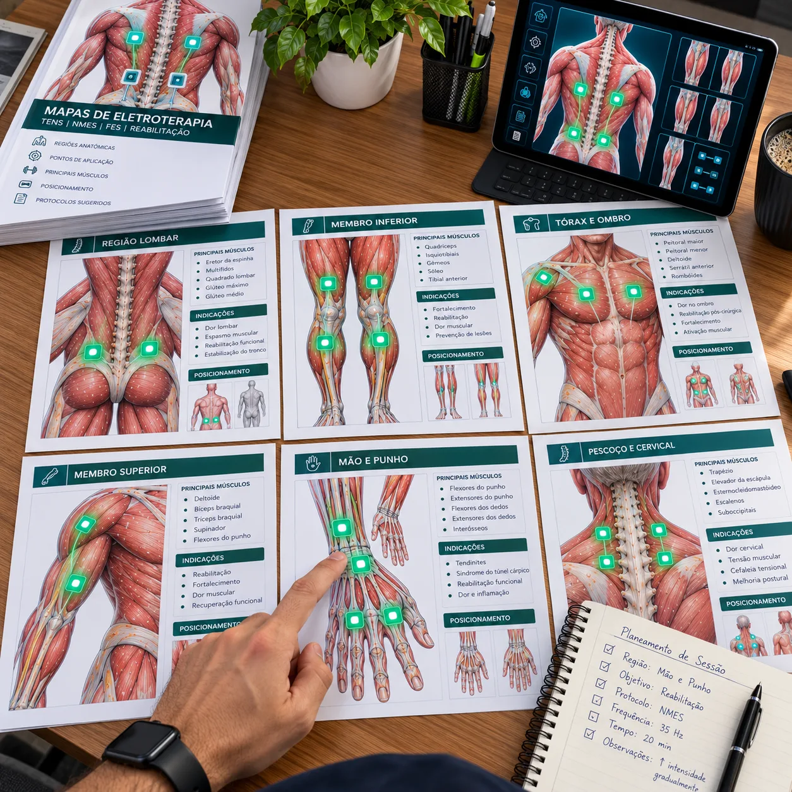
Lombar, Membro Inferior, Tórax/Ombro, Membro Superior, Mão/Punho e Cervical organizados lado a lado.
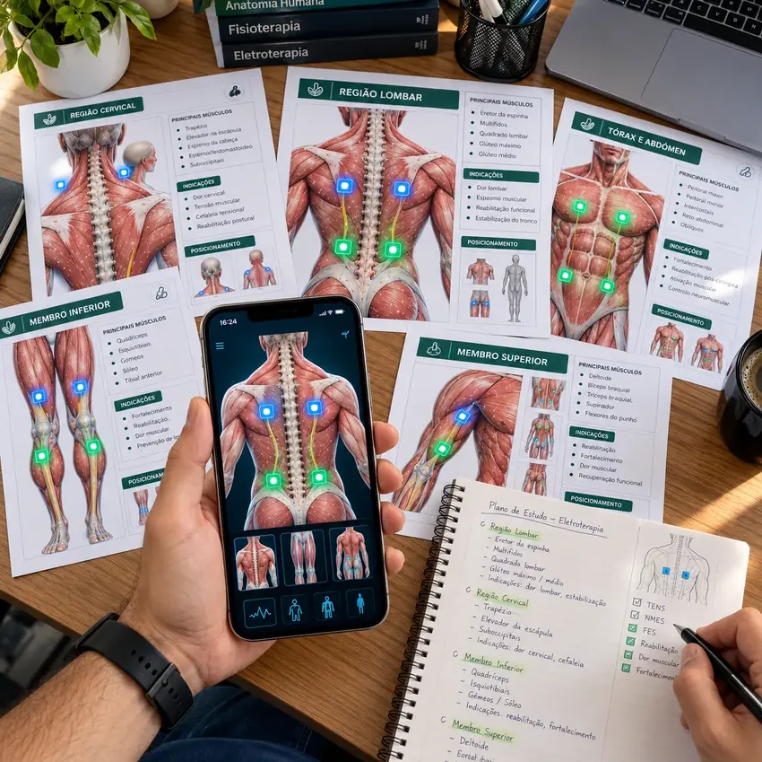
Abre as lâminas digitais de alto contraste no iPhone, iPad ou no computador do gabinete ou clínica em segundos.
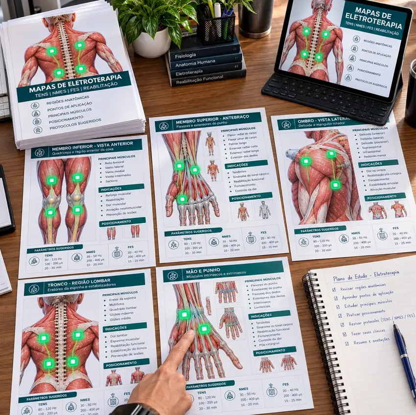
Frequência (Hz), Largura de Pulso (µs) e tempo em minutos indicados na base de cada lâmina.
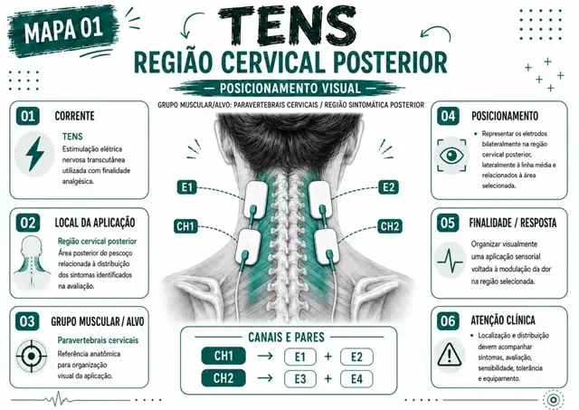
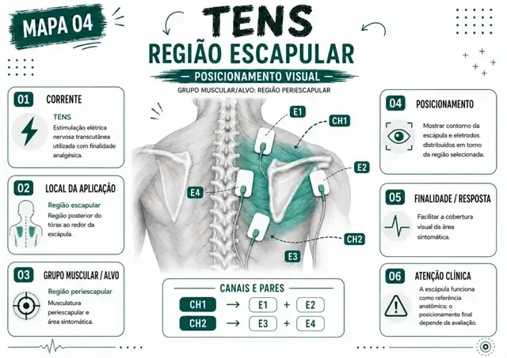
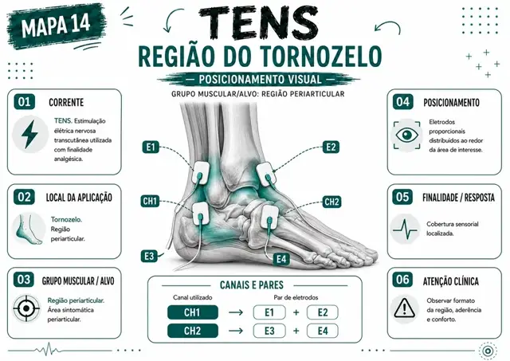
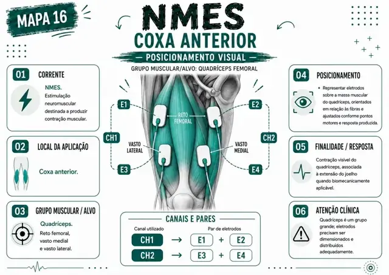
Exatamente como viste nos nossos vídeos: lâminas anatómicas digitais com canais luminosos por cor e feixes musculares para consulta visual rápida no telemóvel, tablet ou computador.
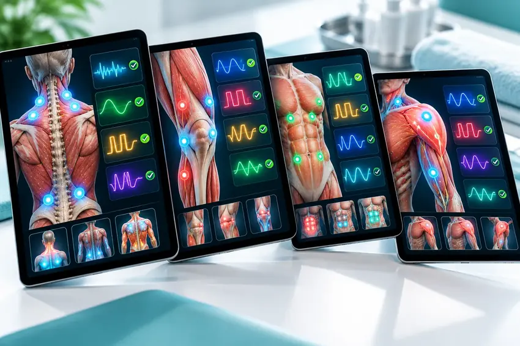
Visualização intuitiva das correntes e feixes musculares em todas as vistas anatómicas (anterior, posterior e lateral).
Sem confusão de cabos: vês imediatamente pela cor onde começa e onde termina o Canal 1 (CH1) e o Canal 2 (CH2) em montagens longitudinais, coplanares e tetrapolares.
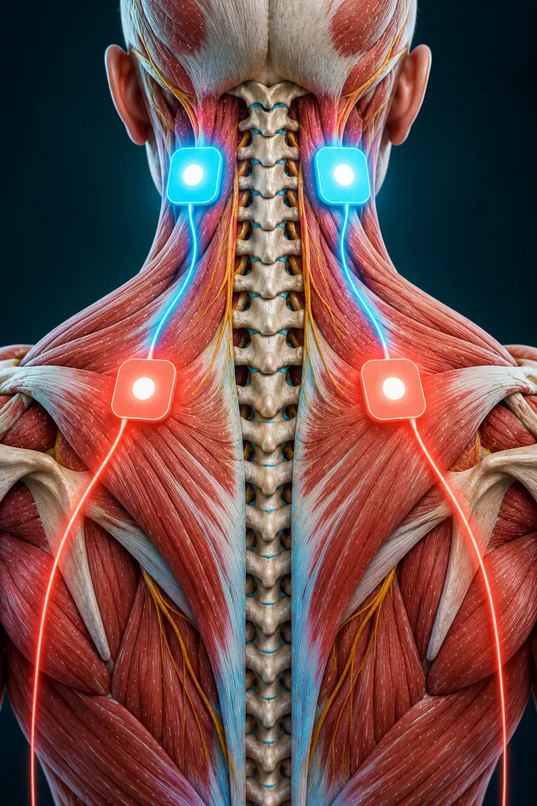
Pares alinhados sobre as fibras cervicais posteriores e trapézio com total segurança anatómica.
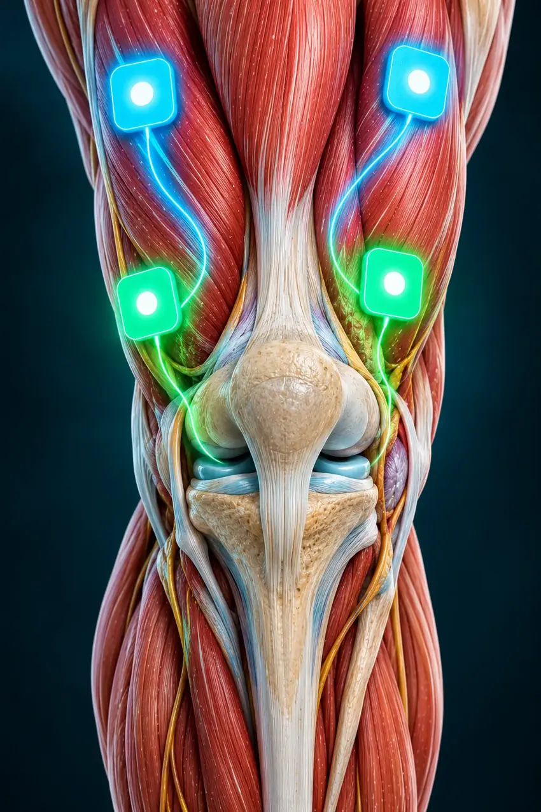
Pontos motores do quadricípite destacados por cor para fortalecimento e reabilitação pós-operatória.
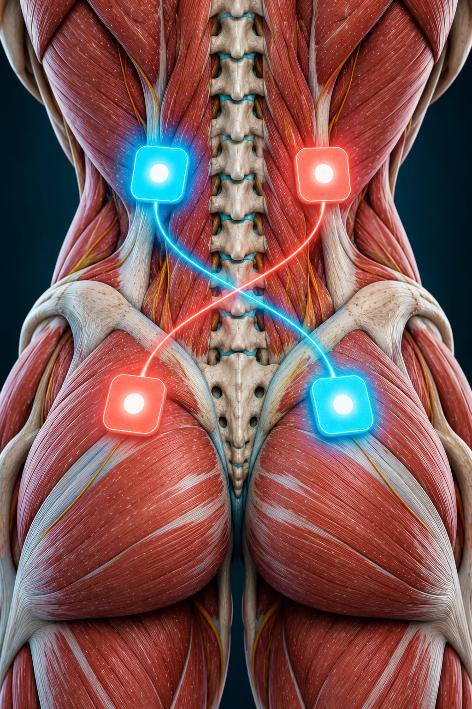
Disposição clara dos canais azul e vermelho para lombalgia, espasmo paravertebral e ciatalgia.
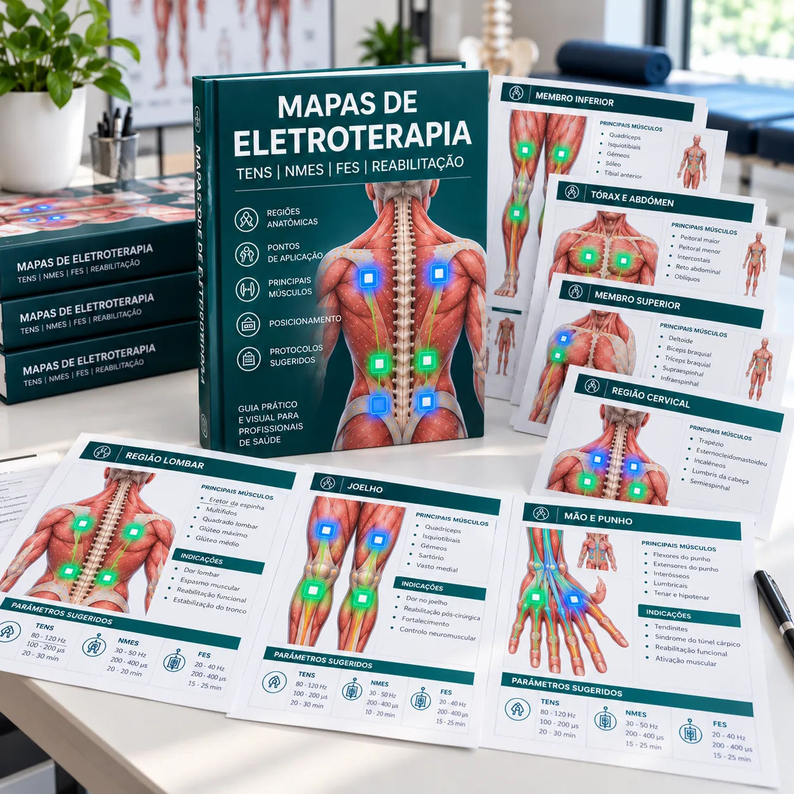
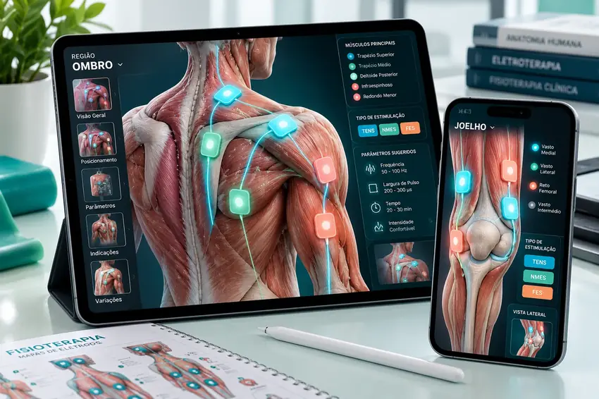
O ElectroMapas Fisioterapia reúne ilustrações anatómicas de alta resolução, pontos de aplicação e parâmetros dosimétricos organizados por região corporal para consultar ou estudar sem dispersão.
Cada lâmina segue a mesma estrutura padronizada para que o teu olho encontre a resposta em segundos:
Identifica os feixes musculares superficiais e profundos e a relação exata com os elétrodos em cada articulação.
Conecta a queixa clínica (dor aguda, crónica, fraqueza ou pós-cirúrgico) à modalidade ideal (TENS, NMES ou FES).
Configura a frequência (Hz), largura de pulso (µs) e tempo sugeridos sem depender de páginas cheias de texto.
Domina o posicionamento em todo o corpo humano sem perder tempo em livros dispersos.
Trapézio, elevador da escápula, esternocleidomastóideo, escalenos e suboccipitais. Indicações para dor cervical, tensão muscular e cefaleia tensional.
Deltoide anterior, lateral e posterior, supraespinhal, infraespinhal e redondo menor. Dor no ombro, reabilitação pós-cirúrgica e estabilidade articular.
Bicípite braquial, tricípite braquial, supinador e flexores/extensores radiais e ulnares do carpo. Epicondilalgias e recuperação funcional.
Flexores e extensores do punho e dedos, interósseos, lumbricais, tenar e hipotenar. Tendinites, síndrome do túnel cárpico e pós-cirúrgico.
Peitoral maior e menor, serrátil anterior, rombóides, intercostais, reto abdominal e oblíquos. Ativação muscular e controlo neuromuscular.
Eretores da espinha, multífidos, quadrado lombar, glúteo máximo e médio. Lombalgia, espasmo muscular, ciatalgia e estabilização lombo-pélvica.
Quadricípite (reto femoral, vasto lateral, vasto medial, vasto intermédio), sartório e isquiotibiais. Dor no joelho, pós-LCA e controlo neuromuscular.
Gastrocnémio (gémeos), sóleo, tibial anterior e estruturas do tornozelo e pé. Entorses, tendinopatia aquiliana, fascite plantar e pé pendente (FES).
Consulta a região, o ponto motor e o canal exato em segundos ao lado da marquesa.
CONSULTAR COM SEGURANÇA NA MARQUESA →Vê como os profissionais utilizam a coleção durante o atendimento direto ao utente.
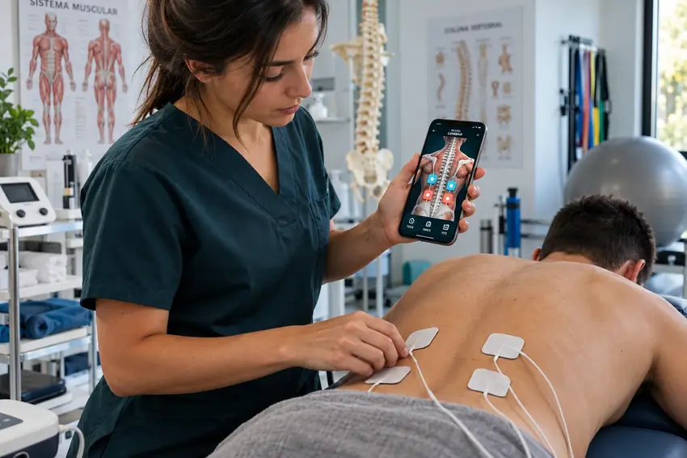
A fisioterapeuta confirma o mapa lombar no iPhone em segundos enquanto posiciona os 4 elétrodos paravertebrais nas costas do utente.
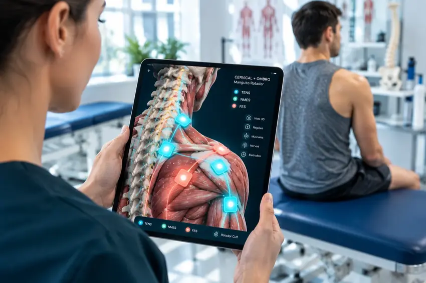
Visualização clara das raízes nervosas, feixes do deltoide e pontos motores antes de iniciar o protocolo de TENS, NMES ou FES.
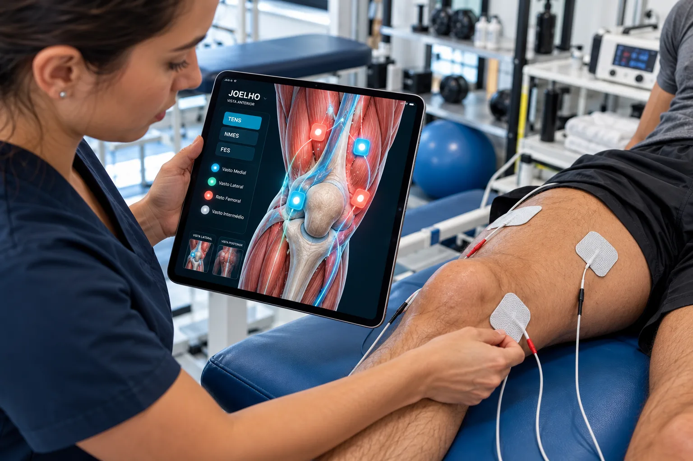
Conferência imediata da polaridade dos cabos nos pontos motores do quadricípite para máxima eficiência de recrutamento.
Um fluxo de trabalho concebido para poupar tempo e eliminar hesitações durante a sessão:
Localiza imediatamente a queixa clínica (ex: analgesia lombar, fortalecimento de quadricípite, edema de tornozelo ou cervicalgia) nas 8 regiões corporais.
Confere o mapa com os pares de elétrodos e canais diferenciados por cor (CH1 a CH4), posicionando os elétrodos exatamente sobre os pontos motores.
Consulta os parâmetros sugeridos de frequência (Hz), largura de pulso (µs) e tempo de aplicação para TENS, NMES, FES, Russa e Aussie sem hesitar.
Além do Atlas com +58 Pranchas Visuais (CH1 ciano / CH2 laranja), recebes 5 bónus práticos de gabinete e ainda 3 manuais clínicos extra — Ultrassons (1 e 3 MHz), Laserterapia/LED e Kit de 25 Testes Ortopédicos — num único acesso imediato (+140 páginas visuais).
Tabela mestra para TENS, NMES, FES, Russa e Aussie — para consultares ao lado da marquesa sem calcular à mão.
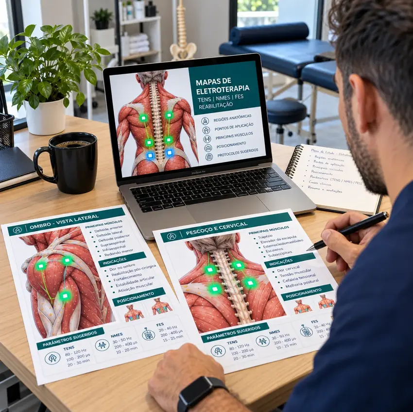
Triagem em 15 segundos: bandeiras vermelhas, contraindicações absolutas e boas práticas de pele e elétrodos.
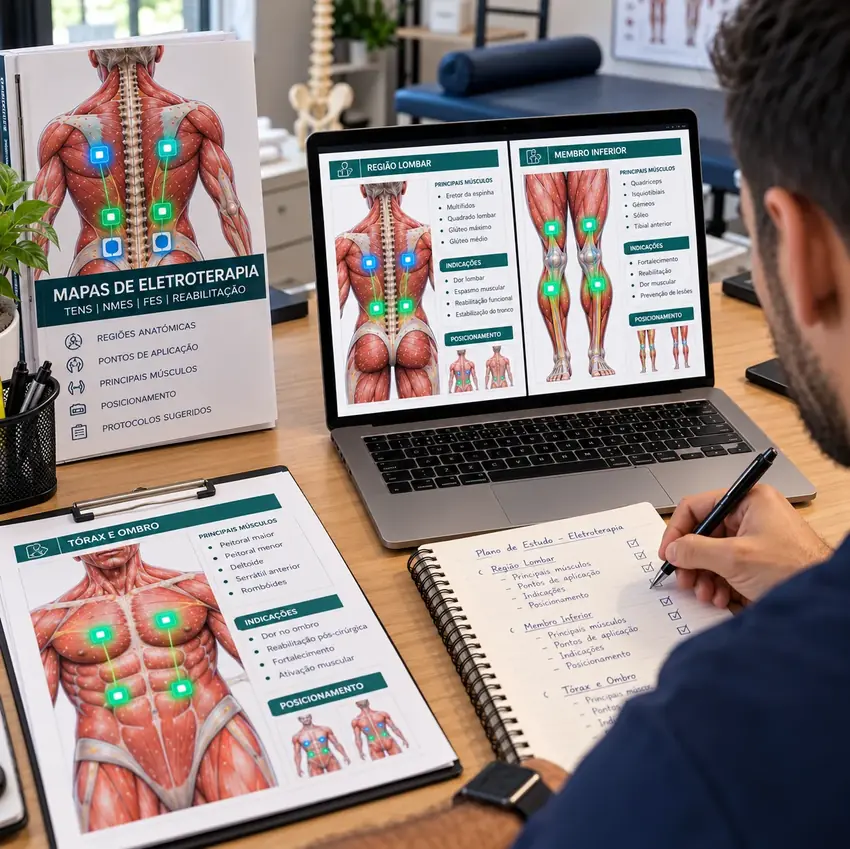
Modelos práticos de sessão de 50 min: janela analgésica com TENS + integração de NMES sobreposto ao exercício.
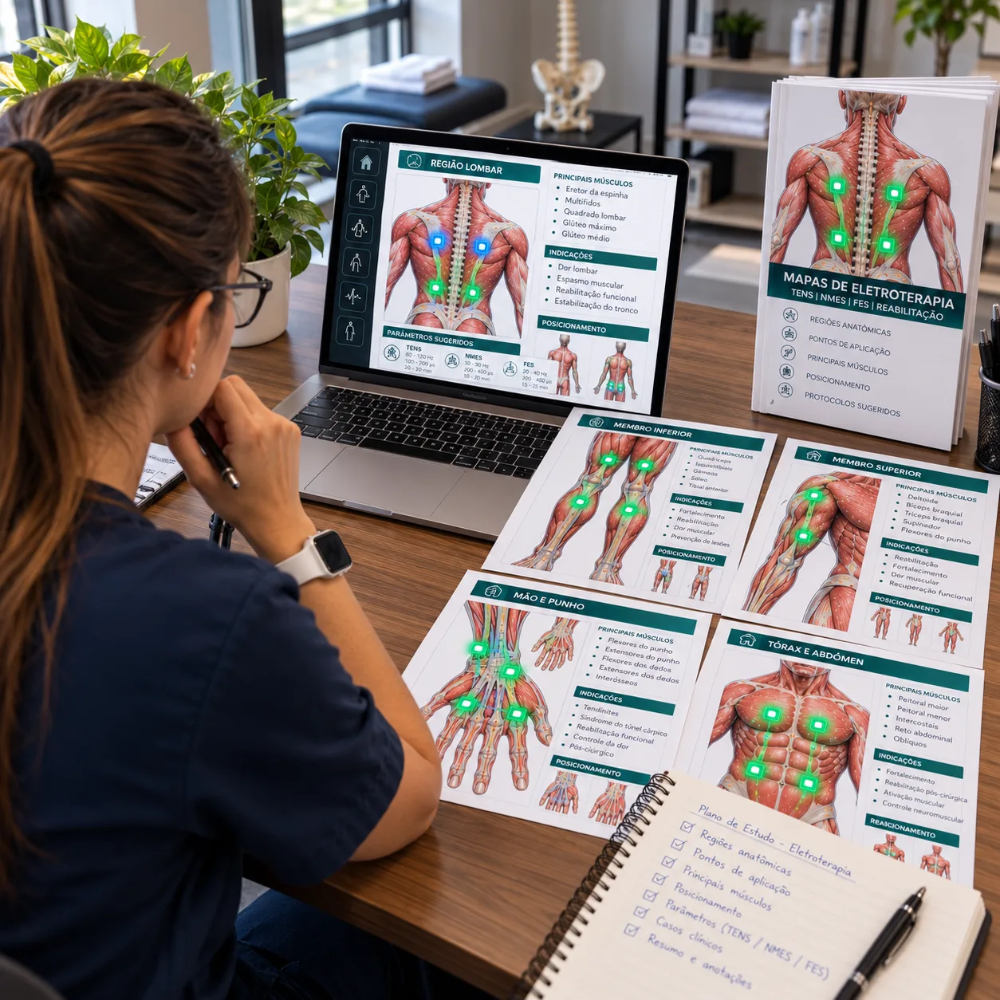
Registo rápido de canais CH1–CH4, parâmetros e EVA pré→pós em 5 sessões — pronta para usar no gabinete.
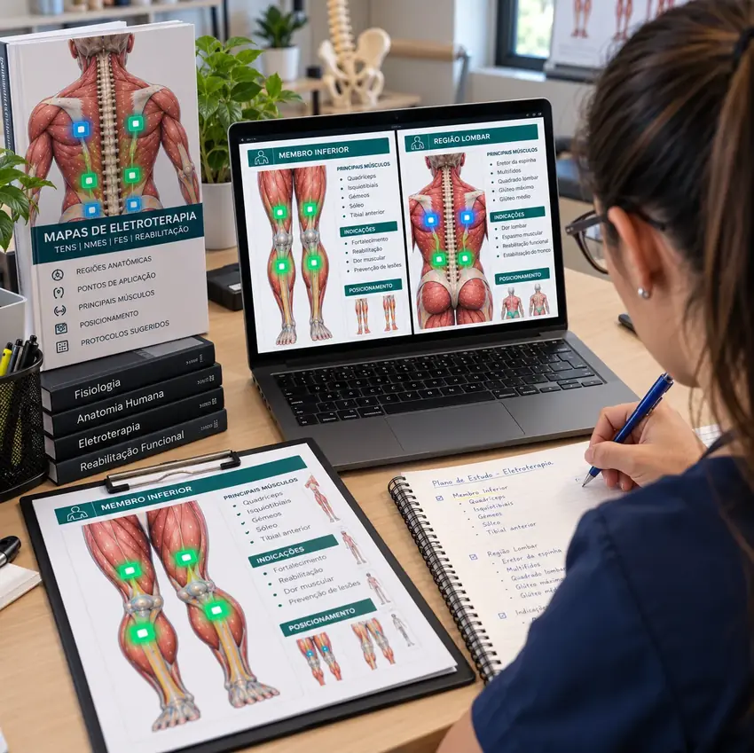
Atalho rápido: lombalgia, ciatalgia, cervicalgia, coifa, epicondilite, joelho, tornozelo e mais — com prancha e Hz de referência.
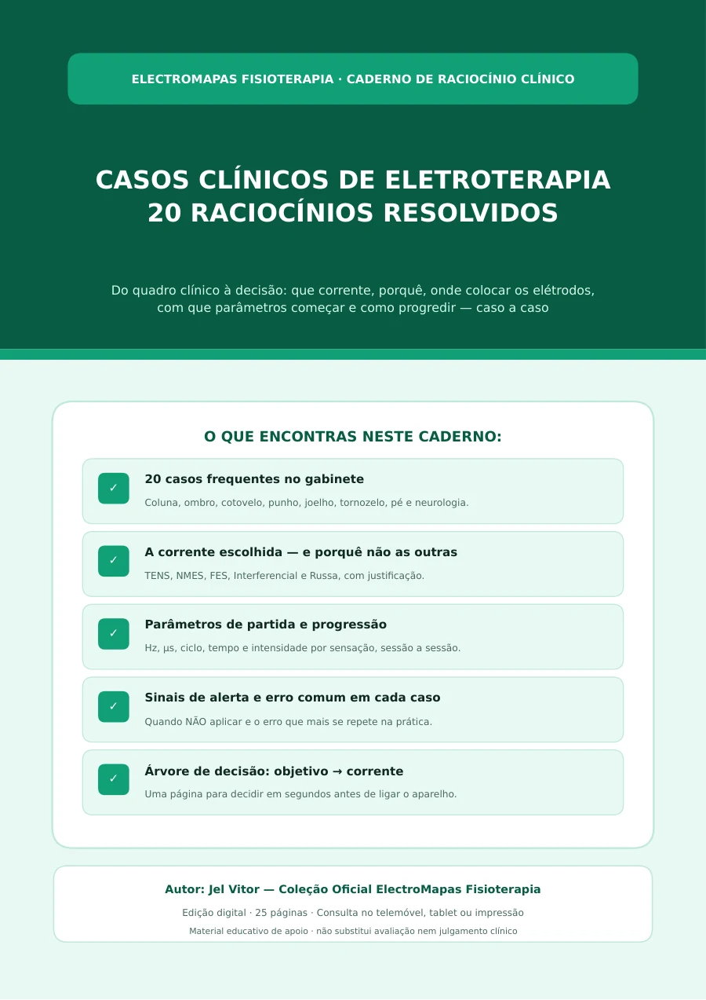
Dosimetria, ERA, modo contínuo vs pulsado e associação Ultrassons + corrente elétrica em patologias miofasciais.
660 nm vs 808/904 nm, Joules por ponto e tempos por potência — consulta rápida de fotobiomodulação na marquesa.
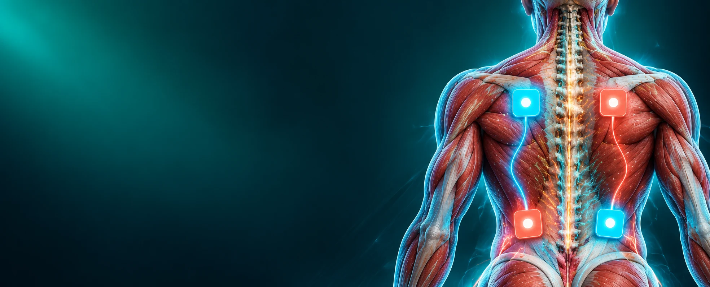
25 testes especiais por articulação, grelha de avaliação e termo de consentimento informado para cruzar na mesma sessão.
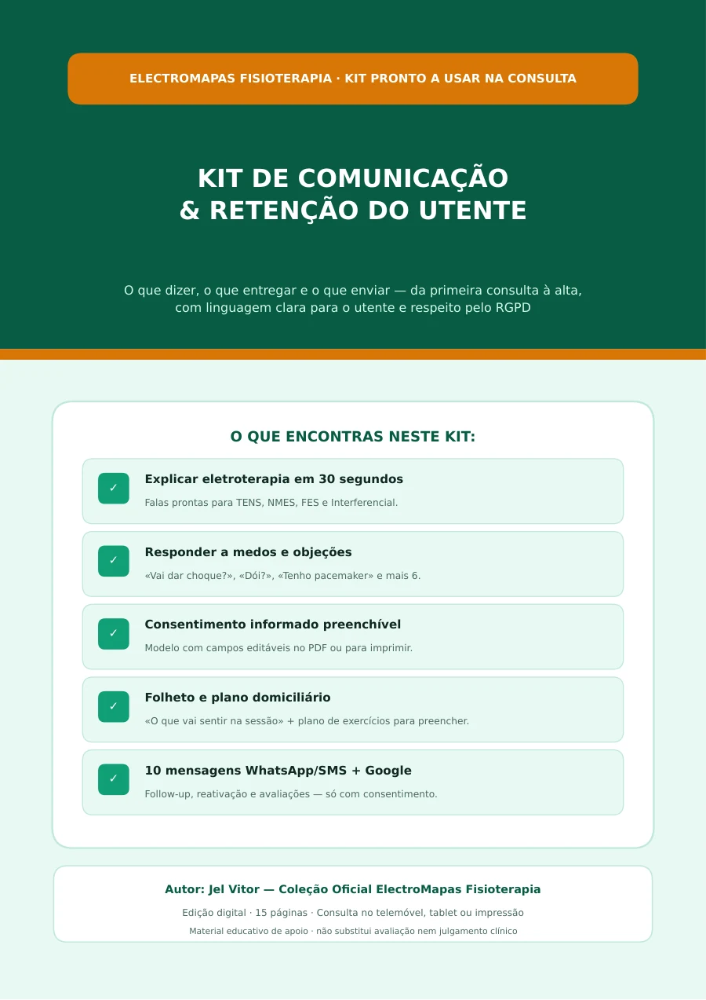
Para quem quer decidir e aplicar eletroterapia com rapidez e segurança, apoiando-se em imagens claras e não em parágrafos infinitos.
Menos de 1/4 do valor de uma única sessão particular em clínica (35€ a 60€). No primeiro utente de segunda-feira, a ferramenta já se pagou.
Consulta visual rápida para confirmares posicionamento, pontos motores e parâmetros em segundos no gabinete ou ao domicílio.
Entra, consulta as +58 pranchas anatómicas e os 8 manuais clínicos no teu telemóvel ou tablet durante 15 dias. Se sentires que não poupa tempo nas tuas sessões, pedes o reembolso com 1 clique na Hotmart e devolvemos 100% do valor.
Assim que confirmas o pagamento (imediato via MB WAY, Cartão, Apple Pay ou PayPal), recebes automaticamente no teu e-mail o link oficial da Hotmart com acesso imediato às +58 pranchas visuais e aos 8 manuais clínicos.
No checkout seguro da Hotmart, selecionas MB WAY, introduzes o teu número de telemóvel e abres a app MB WAY do teu banco para autorizar a operação (tens 4 minutos para confirmar na app). O acesso é libertado no mesmo segundo.
Sim! As pranchas visuais foram desenhadas em alta definição para consulta instantânea no ecrã do telemóvel (iPhone ou Android), iPad/tablet ao lado da marquesa ou no computador do gabinete, podendo também ser impressas se preferires.
Sim! É um pagamento 100% único de 9,97€ (IVA já incluído à taxa legal em vigor), sem qualquer mensalidade ou cobrança futura, com acesso vitalício e direito a todas as atualizações da coleção.